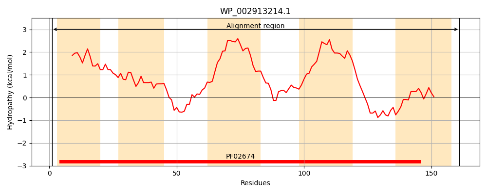
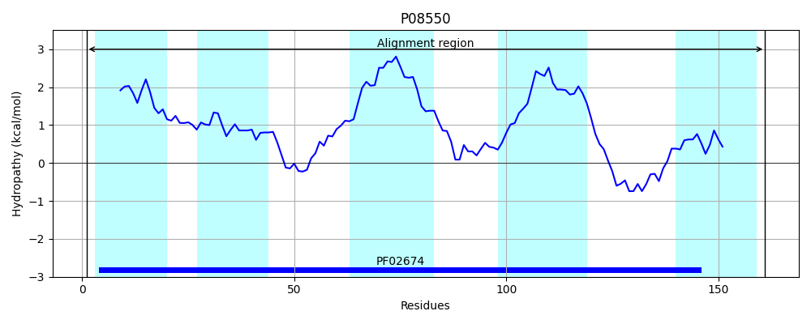
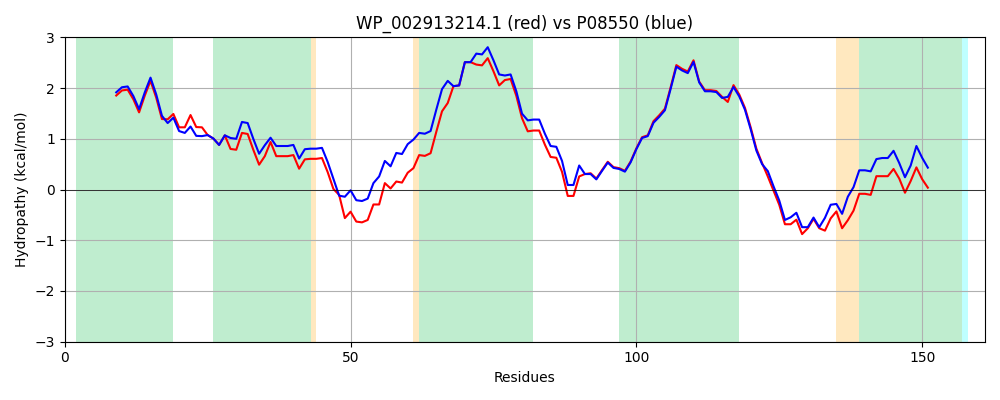

Hit Accession: P08550
Hit TCID: 9.B.160.1.16
Hit Description: gnl|BL_ORD_ID|8466 gnl|TC-DB|P08550|9.B.160.1.16 Colicin V production protein OS=Escherichia coli (strain K12) GN=cvpA PE=1 SV=1
Mach Len: 161
e:0.000000
Query TMS Count : 5
Hit TMS Count: 5
TMS-Overlap Score: 4.900000
Predicted Substrates:None
BLAST Alignment:
Score: 693 , Bit scores: 271 bits, E-value: 5.6e-95, Alignment length: 161, Percentage identity: 83
Query: 1 MVWIDYAIMAVLGLSCLVSLIRGFVREALSLVTWGCAFYVASHYYADLSVWFTGFEDERVRNGIAIAALFIVTLIVGAIVNYVIGQLVEKTGLSGTDRVLGICFGALRGVLIIAAILFFLDTFTGMAKSDDWHQSQFIPYFTPVIRWFFEYLQSSSSFLPK 161
MVWIDYAI+AV+ S LVSLIRGFVREALSLVTWGCAF+VASHYY LSVWFTGFEDE VRNGIAIA LFI TLIVGAIVN+VIGQLVEKTGLSGTDRVLG+CFGALRGVLI+AAILFFLD+FTG++KS+DW +SQ IP F+ +IR FF+YLQSSSSFLP+
Sbjct: 1 MVWIDYAIIAVIAFSSLVSLIRGFVREALSLVTWGCAFFVASHYYTYLSVWFTGFEDELVRNGIAIAVLFIATLIVGAIVNFVIGQLVEKTGLSGTDRVLGVCFGALRGVLIVAAILFFLDSFTGVSKSEDWSKSQLIPQFSFIIRCFFDYLQSSSSFLPR 161 | Protein Hydropathy Plots: |
|---|
|  |  |
Pairwise Alignment-Hydropathy Plot:
|
|---|
|  |